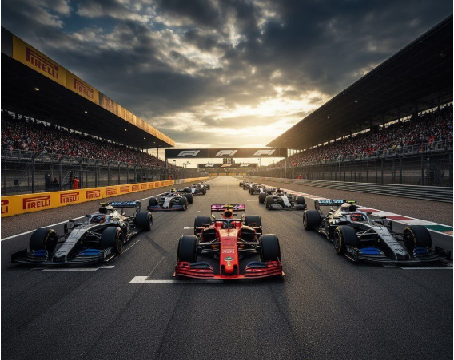

Segredos dos bastidores da F1
De corridas clássicas a mudanças tecnológicas radicais, a Fórmula 1 coleciona histórias fascinantes fora dos holofotes.

Três fatos incríveis sobre a categoria
A grande estreia foi em 1950
O primeiríssimo Grande Prêmio oficial da história aconteceu no circuito de Silverstone, na Inglaterra.
Motores revolucionários em 2026
A nova temporada usará combustíveis 100% sustentáveis e muito mais potência elétrica nas baterias.
Segurança em primeiro lugar
Inovações extremas de engenharia garantem que os pilotos resistam a impactos brutais com segurança.